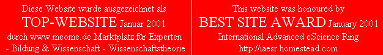

|
|
| ===> ENGLISH | Link to the website in English language. |
| ETWAS IN BEWEGUNG |
In dieser ´ÄTHER-PHYSIK UND -PHILOSOPHIE´ werden der substantiellen Hintergrund allen Seins diskutiert, die Eigenschaften des Äthers definiert und die Bewegungsmuster diverser Erscheinungen dargestellt. In Zeiten des Klimawandels besonders interessant ist die ÄTHER-ELEKTRO-TECHNIK. |
| FLUID-TECHNOLOGIE | Hier werden Merkmale der molekularen Bewegung in Fluid untersucht, die effektive Nutzung dieser Energie in diversen Maschinen, besonders in der Luftfahrt-Technik - mit revolutionären Erkenntnissen und Anwendungen. |
| AUTOR | Hintergrund und Intention des Verantwortlichen für diese Website. |
| NEWS | Updates in dieser Website. |
| Ausgezeichnet bereits in 2001 |
 |